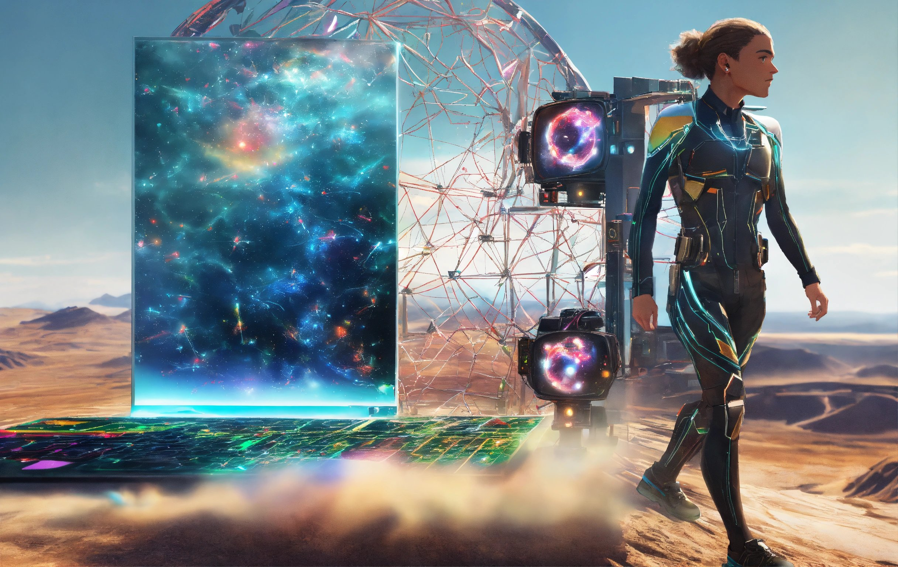
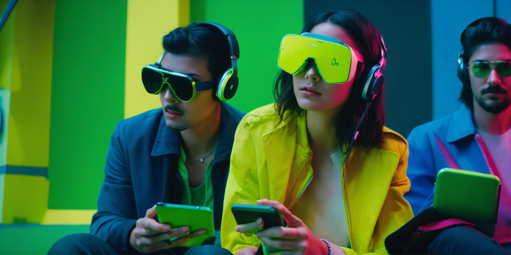
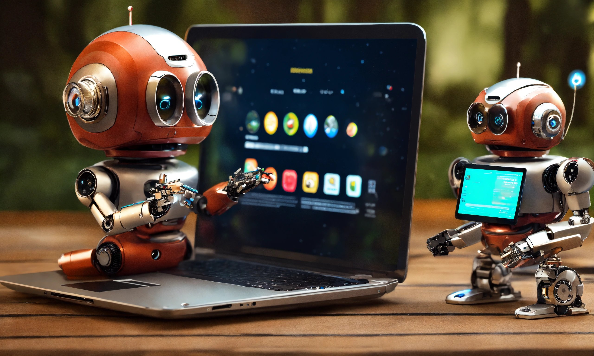

Introduction to OpenAI
OpenAI, founded in December 2015, is a leading research organization dedicated to advancing artificial intelligence (AI) in a manner that is safe, beneficial, and accessible to all of humanity. The organization was established with a visionary mission to ensure that the development and deployment of AI technologies benefit everyone and avoid harmful consequences.OpenAI was founded by a group of notable tech visionaries, including Elon Musk, Sam Altman, Greg Brockman, Ilya Sutskever, John Schulman, and Wojciech Zaremba, among others. The organization's mission is rooted in a commitment to ensuring that artificial general intelligence (AGI) benefits all of humanity. AGI refers to highly autonomous systems that outperform humans at most economically valuable work.
OpenAI Ecosystem
The OpenAI ecosystem is a dynamic and expansive landscape encompassing a multitude of projects and initiatives at the forefront of artificial intelligence research and development. This ecosystem reflects OpenAI's commitment to pushing the boundaries of AI capabilities while adhering to ethical principles. Here's an overview of key components within the OpenAI ecosystem: GPT Series: Language Mastery at Scale GPT-3 and Beyond: The crown jewel of OpenAI's language models, GPT-3, stands as a testament to the organization's prowess. Its ability to understand and generate human-like text on a massive scale has implications for natural language processing, content creation, and conversational AI. Reinforcement Learning and Robotics: Bridging the Physical-Digital Divide Advancements in Reinforcement Learning: OpenAI's research extends beyond language models into reinforcement learning, enabling machines to learn and make decisions through interaction with their environments. This has applications in robotics, creating AI systems capable of mastering physical tasks and adapting to real-world scenarios. Accessible AI: Tools for Developers and Researchers Open Source Initiatives: OpenAI actively contributes to open-source projects, allowing developers and researchers to access and build upon its work. This commitment to openness fosters collaboration and accelerates innovation in the broader AI community. AI for Good: Tackling Societal Challenges Ethics and Societal Impact: OpenAI places a strong emphasis on ethical AI development. The organization actively engages in discussions about the societal impact of AI, working to address biases and ensure responsible AI deployment for the benefit of humanity.
OpenAI and Microsoft Vision
The collaboration between OpenAI and Microsoft signifies a strategic partnership driven by a shared vision for the future of artificial intelligence. Both organizations bring unique strengths to the table, and their combined efforts aim to advance AI research, development, and deployment in ways that align with ethical principles and benefit humanity at large. Here's an exploration of the OpenAI and Microsoft vision: Scaling AI Research and Development: Resource and Expertise Integration: OpenAI and Microsoft join forces to leverage their respective resources and expertise in AI. This collaboration allows for the scaling of AI research and development, enabling the pursuit of ambitious projects that push the boundaries of what is currently possible. Ethical AI Principles: Shared Commitment to Ethical Guidelines: Both OpenAI and Microsoft prioritize the ethical development and deployment of AI technologies. This commitment includes addressing biases, ensuring transparency, and actively engaging in discussions about the societal impact of AI. The collaboration aims to set industry standards for responsible AI practices. Accessible AI for All: Democratizing Access to AI: The partnership emphasizes making AI accessible to a broader audience. By combining forces, OpenAI and Microsoft work towards creating tools, frameworks, and technologies that empower developers and businesses to harness the potential of AI for various applications. Hybrid Intelligence Solutions: Integrating AI into Everyday Workflows: The vision involves seamlessly integrating AI into everyday workflows. OpenAI and Microsoft aim to develop hybrid intelligence solutions that enhance productivity, decision-making, and problem-solving across industries, fostering a future where AI becomes an integral part of human collaboration. Innovation Acceleration: Catalyzing Breakthroughs: OpenAI's inventive AI research coupled with Microsoft's global infrastructure and market reach accelerates the development and deployment of innovative AI solutions. This collaboration strives to catalyze breakthroughs in AI technologies, contributing to the evolution of the field. Addressing Societal Challenges: Tackling Global Issues: The joint vision includes using AI to address significant global challenges, such as climate change, healthcare, and education. By applying AI to these areas, OpenAI and Microsoft aim to make meaningful contributions to societal progress and well-being. Long-Term Safety and Robust AI Systems: Building Trust in AI: OpenAI and Microsoft share a commitment to developing AI systems that prioritize long-term safety and robustness. This includes researching and implementing safeguards to ensure that AI technologies are trustworthy and aligned with human values. In essence, the OpenAI and Microsoft vision revolves around collaborative innovation, ethical AI practices, and a shared dedication to making AI accessible and beneficial for humanity. The partnership seeks to navigate the complexities of AI development with a long-term perspective, fostering a future where AI technologies positively impact various facets of society.
AI and Crypto
OpenAI and Crypto: Navigating the Intersection of AI and Cryptocurrency The intersection of OpenAI and the cryptocurrency landscape showcases a fascinating convergence of two transformative technologies. While OpenAI primarily focuses on artificial intelligence research and development, its involvement in the crypto space reflects an exploration of synergies and opportunities. Here's an exploration of the relationship between OpenAI and cryptocurrency: Decentralized Finance (DeFi) Applications: Smart Contracts and Oracles: OpenAI's advancements in natural language processing and AI capabilities have the potential to enhance decentralized finance applications. Smart contracts and oracles could benefit from AI-driven language models for improved automation, risk assessment, and decision-making within DeFi ecosystems. Crypto-Driven Innovation in AI Funding: Tokenization of AI Projects: The crypto space provides innovative funding models through tokenization. OpenAI could explore token-based funding mechanisms for AI projects, enabling a decentralized approach to financing and involving a broader community in supporting and benefiting from AI advancements. Blockchain and Data Security: Enhanced Data Security: The decentralized and tamper-resistant nature of blockchain technology aligns with OpenAI's commitment to data security and privacy. Integrating blockchain solutions could enhance the security and integrity of data used in AI training, addressing concerns related to data manipulation and unauthorized access. Token-Based Incentives for AI Research: Incentivizing AI Contributions: OpenAI could explore the use of crypto tokens to incentivize and reward contributors to open-source AI projects. Token-based economies have the potential to foster collaboration and innovation within the AI community, aligning with the principles of openness and accessibility. AI-Generated Content and Non-Fungible Tokens (NFTs): Digital Art and NFTs: OpenAI's language models, capable of generating creative and unique content, could contribute to the creation of AI-generated digital art. This content, when tokenized as NFTs on blockchain platforms, adds a new dimension to the intersection of AI and crypto, allowing for the ownership and trade of AI-generated creations. Cryptocurrency as a Medium of Exchange: Global Transactions: OpenAI's global reach and collaborations could benefit from the use of cryptocurrencies as a medium of exchange. Transactions involving AI services, research collaborations, or licensing agreements could be facilitated efficiently and transparently through cryptocurrency payments. AI for Crypto Analytics: Market Analysis and Prediction: AI models developed by OpenAI can be applied to analyze cryptocurrency markets and predict trends. This could be valuable for investors and traders seeking data-driven insights and decision support within the dynamic and complex crypto landscape. Exploring New Business Models: Tokenized Services and Platforms: OpenAI might explore novel business models enabled by cryptocurrencies, such as tokenized services or platforms. This could involve creating ecosystems where participants use crypto tokens to access and benefit from OpenAI's AI services or contribute to its research endeavors. The collaboration between OpenAI and the crypto space illustrates the potential for cross-disciplinary innovation. While OpenAI continues to push the boundaries of AI, its exploration of crypto technologies demonstrates a forward-looking approach to leverage synergies that could shape the future of both fields. The intersection of OpenAI and cryptocurrency represents a frontier where technology, innovation, and decentralized principles converge.

Decentralized AI Chatbot
Decentralized AI and Chatbots: Shaping the Future of Conversational Intelligence Decentralized AI and chatbots represent a groundbreaking synergy, ushering in a new era of conversational intelligence. As the traditional model of centralized systems encounters challenges related to data privacy, scalability, and control, decentralized approaches offer innovative solutions. Here's an exploration of how decentralized AI is influencing the evolution of chatbots: Distributed Data Processing: Enhanced Privacy: In a decentralized AI model, user data is processed locally or across a distributed network rather than being concentrated in a central server. This approach enhances user privacy by minimizing the need to store sensitive information in a single location, reducing the risk of data breaches. Blockchain Integration: Immutable Recordkeeping: Blockchain technology is often integrated into decentralized systems to provide an immutable and transparent record of interactions. In the context of chatbots, this ensures trustworthiness in conversation histories and transactions, fostering a more secure and accountable environment. User Empowerment and Control: Data Ownership: Decentralized AI empowers users by giving them greater control over their data. Users can choose what information to share and retain ownership, mitigating concerns related to data exploitation. This user-centric approach aligns with the principles of decentralization and individual empowerment. Resilience and Scalability: Distributed Processing Nodes: Decentralized chatbots leverage a network of processing nodes, enhancing resilience against single points of failure. This architecture also enables scalable solutions, as the load is distributed across the network, ensuring optimal performance even during periods of high demand. Open Source Collaboration: Community-Driven Development: Decentralized AI and chatbot projects often embrace open-source principles, encouraging collaborative development by a diverse community of contributors. This fosters innovation, accelerates feature enhancements, and ensures a more inclusive and adaptable solution. Token Economies and Incentives: Cryptocurrency Integration: Some decentralized chatbots utilize cryptocurrency tokens to facilitate transactions, incentivize user engagement, or reward contributors. This token-based economy introduces new incentives for users and developers, creating a dynamic ecosystem around the chatbot platform. Reduced Dependency on Central Authorities: Autonomous Decision-Making: Decentralized chatbots can operate with greater autonomy, reducing dependence on central authorities for decision-making. This autonomy is facilitated by consensus mechanisms and smart contracts, allowing for decentralized governance and operation. Cross-Platform Interoperability: Interoperable Solutions: Decentralized AI and chatbots can be designed to operate seamlessly across different platforms and applications. This interoperability enhances user experience, allowing individuals to engage with chatbots in various contexts without the constraints of centralized silos. Adaptive Learning and Personalization: Federated Learning Models: Decentralized AI enables the implementation of federated learning models. This approach allows chatbots to learn and adapt based on user interactions while keeping the learning process decentralized, leading to more personalized and context-aware conversational experiences. Challenges and Opportunities: Scalability Challenges: While decentralized systems offer many advantages, challenges related to scalability and efficiency must be addressed. Ongoing research and innovation are essential to overcoming these hurdles and realizing the full potential of decentralized AI and chatbots. In summary, the integration of decentralized AI with chatbots marks a paradigm shift in conversational intelligence. By prioritizing privacy, user empowerment, and innovative technologies like blockchain, decentralized chatbots are poised to shape a future where intelligent conversations are not only dynamic and context-aware but also driven by principles of decentralization, transparency, and user control.
Future of OpenAI
OpenAI's Future: Pioneering the Next Frontier of AI Evolution OpenAI's trajectory into the future is marked by a commitment to advancing artificial intelligence (AI) in ways that are transformative, ethical, and beneficial for humanity. As the organization continues to push the boundaries of AI research and development, several key themes and initiatives define OpenAI's vision for the future: Advancements in Language Models: OpenAI is expected to build upon the success of its powerful language models, such as GPT-3. Future iterations may feature even more advanced natural language understanding and generation capabilities, contributing to applications in content creation, conversational AI, and knowledge synthesis. Ethical AI Development: OpenAI remains dedicated to ethical AI practices, ensuring that the technology is developed and deployed responsibly. The organization will likely continue to lead conversations around AI ethics, addressing biases, transparency, and societal impacts to set industry standards for responsible AI development. Decentralization and Collaboration: OpenAI's exploration of decentralized AI models and collaborations with the wider community is expected to grow. This approach fosters inclusivity, innovation, and shared contributions, aligning with the organization's commitment to making AI accessible to a global audience. Integration of AI and Blockchain: The intersection of AI and blockchain technologies may become more pronounced in OpenAI's future endeavors. Exploring how blockchain can enhance data security, transparency, and decentralized decision-making within AI systems could be a key area of focus. Human-AI Collaboration: OpenAI envisions a future where AI systems work collaboratively with humans, enhancing productivity, creativity, and problem-solving. Integrating AI into everyday workflows and decision-making processes is likely to be a significant aspect of OpenAI's future goals. AI for Social Good: OpenAI's commitment to using AI for the betterment of society is expected to lead to initiatives addressing global challenges. Applications in healthcare, education, environmental sustainability, and other critical areas may emerge, showcasing the positive impact of AI on humanity. Education and Access: OpenAI is likely to continue initiatives focused on education and providing access to AI tools. This includes educational resources, developer tools, and collaborations that empower individuals and organizations to harness the potential of AI for various applications. Strategic Partnerships: OpenAI's strategic partnership with Microsoft may deepen, leading to collaborative projects that leverage Microsoft's resources and expertise. Joint efforts could accelerate AI research, development, and deployment, influencing the broader technology landscape. Innovation in AI Hardware: Future developments in AI hardware, including specialized chips for accelerating AI tasks, may play a crucial role in OpenAI's pursuits. Optimized hardware can enhance the efficiency and performance of AI models, driving innovation in the field. Continued Transparency and Collaboration: OpenAI is expected to maintain a commitment to transparency in its research and collaborative efforts. Continued engagement with the global AI community, open-source contributions, and transparent communication about advancements will likely be integral to OpenAI's future. In conclusion, OpenAI's future unfolds as a narrative of continual innovation, ethical leadership, and a dedication to shaping AI for the benefit of humanity. As the organization navigates the evolving landscape of artificial intelligence, it stands poised to influence and contribute to the next frontier of AI evolution.